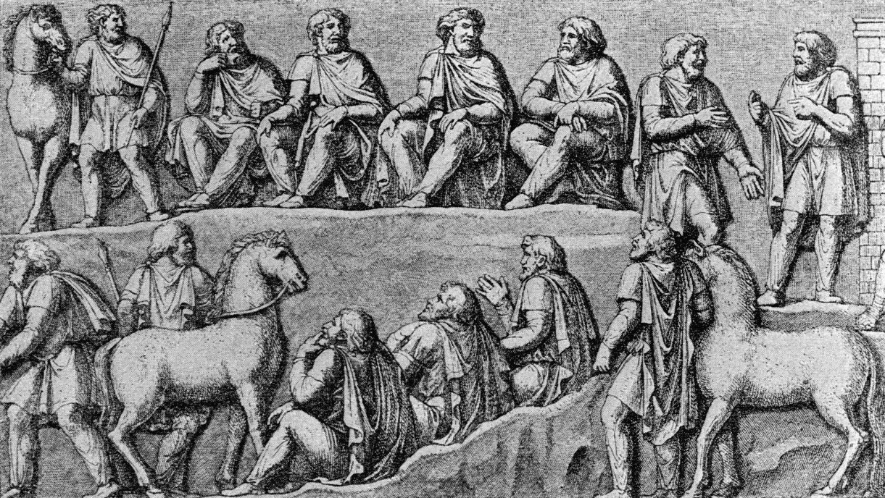

Sinds 20 mei 2025 is de oprichting van de informele “Vereniging ter Bevordering van Burgerlijke Soevereiniteit Kennis en Weerbaarheid” een feit.

De VBBSKW heeft als doel burgers te helpen weerbaarder te worden middels kennis en solidariteit. Dat doen we voornamelijk door community building. Elkaar helpen en inspireren hoort daar bij. Daarbij richt de vereniging zich op het benutten van kansen die reeds geboden worden, zoals het uitdaagrecht, maatschappelijke participatieprojecten en burgerinitiatieven.
Onder druk van toenemende digitalisering dreigt de burger steeds meer soevereiniteit te verliezen. Problemen lopen dikwijls zo hoog op dat een bezoek aan het loket Digitale Overheid of het Juridisch Loket deze problemen niet meer het hoofd kunnen bieden. Daarnaast hebben wij een pro-actievere aanpak door burgers op te roepen om zichzelf te informeren en vaardigheden eigen te maken.
De doelstelling is om de burger niet afhankelijk te maken, maar juist zelfstandig, met zelfbeschikking over informatie en middelen.
Dus:
Word dan lid van de VBBSKW
Als u een lidmaatschapsaanvraag naar voorzitter@vbbskw.com verstuurd ontvangt u de statuten en het inschrijfformulier.
✉️ voorzitter@vbbskw.com